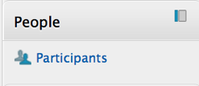
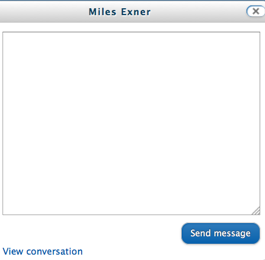

How Can I Retake a Quiz/Exam?
Most online
quizzes and exams are setup to only allow one attempt to complete the test.
Each individual instructor has the ability to set and adjust the quiz or exam
settings, so every quiz may not be setup in the manner. When you open the quiz
page to start the quiz, instructions will be clearly listed as to the number of
allowed attempts, the time limit, and when the quiz closes.
Pay close attention to both the time limit allowed to complete the test and the
closing time of the quiz. If you are in the middle of taking the test, and
either the time limit expires or the quiz closing time passes, you will be
automatically logged out and the questions you did complete will be submitted
and scored.
We do understand that things can happen, such as a power failure, internet
outage, or some other catastrophic event that interrupts your test. Your
instructor will have the final authority on whether you can retake a quiz or
exam.
1. Try to log back into the quiz.
In the event of a power failure or internet outage, try logging back into the course and attempt to take the quiz or exam again. If you get a message that indicates you have no remaining attempts. Contact your instructor and explain your circumstances.
2. Contact your instructor
Your instructor has final authority to determine if you will be allowed to retake a quiz or exam. You can send a message through the eLearning system directly to your instructor:
- From the Course Home Page, locate the People block located in the column
along the right side of the page.
- Click on the Participants link.

This will display a list of all students and your instructor enrolled in the class.
- Click on your instructor's name to open their online profile
page.
- On the top left corner of the profile, click the Message link.
The message page will display once you’re done typing the circumstances and details, click send message.

3. No need to contact the IT Help Desk or submit a support ticket...
The IT Help Desk can only redirect you back to your instructor. Only your instructor has the authority to determine if you will be able to retake the quiz or exam. Your instructor will know how to reset your quiz to allow you back in to retake the test.